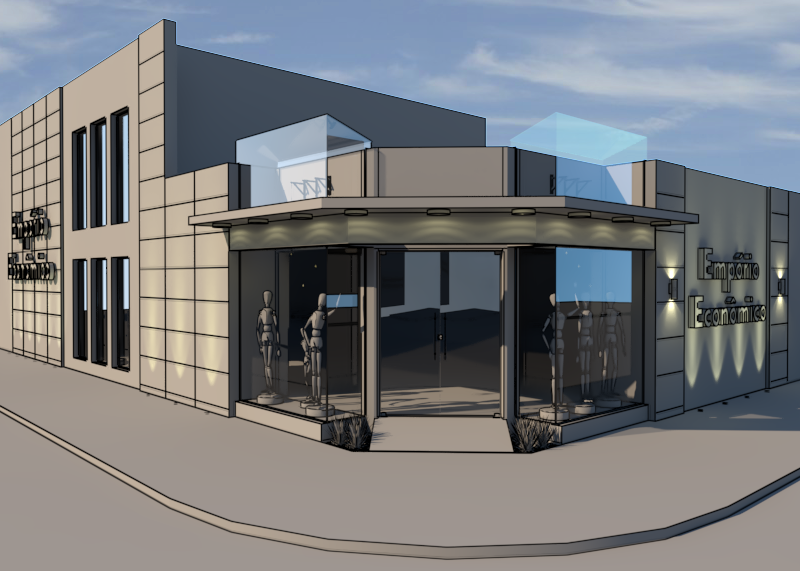

Curso de VRay para SketchUp
Descrição do Projeto
Ao final do curso de VRay para SketchUp foram disponibilizadas duas modelagens de projetos aleatórios, um de área externa e um de área interna, a fim de que fosse possível colocar em prática os conhecimentos adquiridos no decorrer das etapas, exercitando a aplicação e configuração de diferentes materiais, iluminação interna e externa, e demais ajustes técnicos. Tais exercícios contribuíram muito para a melhoria da minha capacidade de criação de imagens.
As modelagens foram disponibilizadas no software SketchUp e renderizadas utilizando VRay for SketchUp 2.0.
Voltar ao portfólio